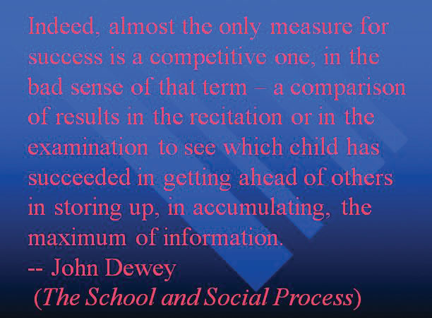

When you give a speech, you are presenting much more than just a collection of words and ideas. Because you are speaking “live and in person,” your audience members will experience your speech through all five of their senses: hearing, vision, smell, taste, and touch. In some speaking situations, the speaker appeals only to the sense of hearing, more or less ignoring the other senses except to avoid visual distractions by dressing and presenting himself or herself in an appropriate manner. But the speaking event can be greatly enriched by appeals to the other senses. This is the role of presentation aids.
Presentation aidsThe resources beyond the speech itself that a speaker uses to enhance the message conveyed to the audience., sometimes also called sensory aids, are the resources beyond the speech itself that a speaker uses to enhance the message conveyed to the audience. The type of presentation aids that speakers most typically make use of are visual aids: pictures, diagrams, charts and graphs, maps, and the like. Audible aids include musical excerpts, audio speech excerpts, and sound effects. A speaker may also use fragrance samples or a food samples as olfactory or gustatory aids. Finally, presentation aids can be three-dimensional objects, animals, and people; they can unfold over a period of time, as in the case of a how-to demonstration.
As you can see, the range of possible presentation aids is almost infinite. However, all presentation aids have one thing in common: To be effective, each presentation aid a speaker uses must be a direct, uncluttered example of a specific element of the speech. It is understandable that someone presenting a speech about Abraham Lincoln might want to include a picture of him, but because most people already know what Lincoln looked like, the picture would not contribute much to the message (unless, perhaps, the message was specifically about the changes in Lincoln’s appearance during his time in office). Other visual artifacts are more likely to deliver information more directly relevant to the speech—a diagram of the interior of Ford’s Theater where Lincoln was assassinated, a facsimile of the messy and much-edited Gettysburg Address, or a photograph of the Lincoln family, for example. The key is that each presentation aid must directly express an idea in your speech.
Moreover, presentation aids must be used at the time when you are presenting the specific ideas related to the aid. For example, if you are speaking about coral reefs and one of your supporting points is about the location of the world’s major reefs, it will make sense to display a map of these reefs while you’re talking about location. If you display it while you are explaining what coral actually is, or describing the kinds of fish that feed on a reef, the map will not serve as a useful visual aid—in fact, it’s likely to be a distraction.
Presentation aids must also be easy to use. At a conference on organic farming, your author watched as the facilitator opened the orientation session by creating a conceptual map of our concerns, using a large newsprint pad on an easel. In his shirt pocket were wide-tipped felt markers in several colors. As he was using the black marker to write the word “pollution,” he dropped the cap on the floor, and it rolled a few inches under the easel. When he bent over to pick up the cap, all the other markers fell out of his pocket. They rolled about too, and when he tried to retrieve them, he bumped the easel, leading the easel and newsprint pad to tumble over on top of him. The audience responded with amusement and thundering applause, but the serious tone of his speech was ruined. The next two days of the conference were punctuated with allusions to the unforgettable orientation speech. This is not how you will want your speech to be remembered.
To be effective, presentation aids must also be easy for the listeners to see and understand. In this chapter, we will present some principles and strategies to help you incorporate hardworking, effective presentation aids into your speech. We will begin by discussing the functions that good presentation aids fulfill. Next, we will explore some of the many types of presentation aids and how best to design and utilize them. We will also describe various media that can be used for presentation aids. We will conclude with tips for successful preparation and use of presentation aids in a speech.
Why should you use presentation aids? If you have prepared and rehearsed your speech adequately, shouldn’t a good speech with a good delivery be enough to stand on its own? While it is true that impressive presentation aids will not rescue a poor speech, it is also important to recognize that a good speech can often be made even better by the strategic use of presentation aids.
Presentation aids can fulfill several functions: they can serve to improve your audience’s understanding of the information you are conveying, enhance audience memory and retention of the message, add variety and interest to your speech, and enhance your credibility as a speaker. Let’s examine each of these functions.
Human communication is a complex process that often leads to misunderstandings. If you are like most people, you can easily remember incidents when you misunderstood a message or when someone else misunderstood what you said to them. Misunderstandings happen in public speaking just as they do in everyday conversations.
One reason for misunderstandings is the fact that perception and interpretation are highly complex individual processes. Most of us have seen the image in which, depending on your perception, you see either the outline of a vase or the facial profiles of two people facing each other. This shows how interpretations can differ, and it means that your presentations must be based on careful thought and preparation to maximize the likelihood that your listeners will understand your presentations as you intend them to.
As a speaker, one of your basic goals is to help your audience understand your message. To reduce misunderstanding, presentation aids can be used to clarify or to emphasize.
Clarification is important in a speech because if some of the information you convey is unclear, your listeners will come away puzzled or possibly even misled. Presentation aids can help clarifyTo make clear so that the audience understands your meanings the way you intend. a message if the information is complex or if the point being made is a visual one.
If your speech is about the impact of the Coriolis effect on tropical storms, for instance, you will have great difficulty clarifying it without a diagram because the process is a complex one. The diagram in Figure 15.1 "Coriolis Effect" would be effective because it shows the audience the interaction between equatorial wind patterns and wind patterns moving in other directions. The diagram allows the audience to process the information in two ways: through your verbal explanation and through the visual elements of the diagram.
Figure 15.2 "Model of Communication" is another example of a diagram that maps out the process of human communication. In this image you clearly have a speaker and an audience (albeit slightly abstract), with the labels of source, channel, message, receivers, and feedback to illustrate the basic linear model of human communication.
Figure 15.1 Coriolis Effect

Figure 15.2 Model of Communication

Figure 15.3 Petroglyph

Another aspect of clarifying occurs when a speaker wants to visually help audience members understand a visual concept. For example, if a speaker is talking about the importance of petroglyphs in Native American culture, just describing the petroglyphs won’t completely help your audience to visualize what they look like. Instead, showing an example of a petroglyph, as in Figure 15.3 "Petroglyph", can more easily help your audience form a clear mental image of your intended meaning.
When you use a presentational aid for emphasisTo impress the importance or to repeat the verbal message in visual form., you impress your listeners with the importance of an idea. In a speech on water conservation, you might try to show the environmental proportions of the resource. When you use a conceptual drawing like the one in Figure 15.4 "Planetary Water Supply", you show that if the world water supply were equal to ten gallons, only ten drops would be available and potable for human or household consumption. This drawing is effective because it emphasizes the scarcity of useful water and thus draws attention to this important information in your speech.
Figure 15.4 Planetary Water Supply

Figure 15.5 Chinese Lettering Amplified

Source: Image courtesy of Wikimedia, http://commons.wikimedia.org/wiki/File:Acupuncture_chart_300px.jpg.
Another way of emphasizing that can be done visually is to zoom in on a specific aspect of interest within your speech. In Figure 15.5 "Chinese Lettering Amplified", we see a visual aid used in a speech on the importance of various parts of Chinese characters. On the left side of the visual aid, we see how the characters all fit together, with an emphasized version of a single character on the right.
The second function that presentation aids can serve is to increase the audience’s chances of remembering your speech. A 1996 article by the US Department of Labor summarized research on how people learn and remember. The authors found that “83% of human learning occurs visually, and the remaining 17% through the other senses—11% through hearing, 3.5% through smell, 1% through taste, and 1.5% through touch.”United States Department of Labor. (1996). Presenting effective presentations with visual aids. Retrieved from http://www.osha.gov Most of how people learn is through seeing things, so the visual component of learning is very important. The article goes on to note that information stored in long-term memory is also affected by how we originally learn the material. In a study of memory, learners were asked to recall information after a three day period. The researchers found that they retained 10 percent of what they heard from an oral presentation, 35 percent from a visual presentation, and 65 percent from a visual and oral presentation.Lockard, J., & Sidowski, J. R. (1961). Learning in fourth and sixth graders as a function of sensory mode of stimulus presentation and overt or covert practice. Journal of Educational Psychology, 52(5), 262–265. doi: 10.1037/h0043483 It’s amazing to see how the combined effect of both the visual and oral components can contribute to long-term memory.
For this reason, exposure to a visual image can serve as a memory aid to your listeners. When your graphic images deliver information effectively and when your listeners understand them clearly, audience members are likely to remember your message long after your speech is over.
Moreover, people often are able to remember information that is presented in sequential steps more easily than if that information is presented in an unorganized pattern. When you use a presentation aid to display the organization of your speech, you will help your listeners to observe, follow, and remember the sequence of information you conveyed to them. This is why some instructors display a lecture outline for their students to follow during class.
An added plus of using presentation aids is that they can boost your memory while you are speaking. Using your presentation aids while you rehearse your speech will familiarize you with the association between a given place in your speech and the presentation aid that accompanies that material. For example, if you are giving an informative speech about diamonds, you might plan to display a sequence of slides illustrating the most popular diamond shapes: brilliant, marquise, emerald, and so on. As you finish describing one shape and advance to the next slide, seeing the next diamond shape will help you remember the information about it that you are going to deliver.
A third function of presentation aids is simply to make your speech more interesting. While it is true that a good speech and a well-rehearsed delivery will already include variety in several aspects of the presentation, in many cases, a speech can be made even more interesting by the use of well-chosen presentation aids.
For example, you may have prepared a very good speech to inform a group of gardeners about several new varieties of roses suitable for growing in your local area. Although your listeners will undoubtedly understand and remember your message very well without any presentation aids, wouldn’t your speech have greater impact if you accompanied your remarks with a picture of each rose? You can imagine that your audience would be even more enthralled if you had the ability to display an actual flower of each variety in a bud vase.
Similarly, if you were speaking to a group of gourmet cooks about Indian spices, you might want to provide tiny samples of spices that they could smell and taste during your speech. Taste researcher Linda Bartoshuk has given presentations in which audience members receive small pieces of fruit and are asked to taste them at certain points during the speech.Association for Psychological Science. (2011, May 28). Miracle fruit and flavor: An experiment performed at APS 2010 [Video file]. Retrieved from http://www.psychologicalscience.org/index.php/publications/observer/obsonline/miracle-fruit-and-flavor-an-experiment-performed-at-aps-2010.html
Presentation aids alone will not be enough to create a professional image. As we mentioned earlier, impressive presentation aids will not rescue a poor speech. However, even if you give a good speech, you run the risk of appearing unprofessional if your presentation aids are poorly executed. This means that in addition to containing important information, your presentation aids must be clear, clean, uncluttered, organized, and large enough for the audience to see and interpret correctly. Misspellings and poorly designed presentation aids can damage your credibility as a speaker. Conversely, a high quality presentation will contribute to your professional image. In addition, make sure that you give proper credit to the source of any presentation aids that you take from other sources. Using a statistical chart or a map without proper credit will detract from your credibility, just as using a quotation in your speech without credit would.
If you focus your efforts on producing presentation aids that contribute effectively to your meaning, that look professional, and that are handled well, your audience will most likely appreciate your efforts and pay close attention to your message. That attention will help them learn or understand your topic in a new way and will thus help the audience see you as a knowledgeable, competent, credible speaker.
As we saw in the case of the orientation presentation at the organic farming conference, using presentation aids can be risky. However, with a little forethought and adequate practice, you can choose presentation aids that enhance your message and boost your professional appearance in front of an audience.
One principle to keep in mind is to use only as many presentation aids as necessary to present your message or to fulfill your classroom assignment. Although the maxim “less is more” may sound like a cliché, it really does apply in this instance. The number and the technical sophistication of your presentation aids should never overshadow your speech.
Another important consideration is technology. Keep your presentation aids within the limits of the working technology available to you. Whether or not your classroom technology works on the day of your speech, you will still have to present. What will you do if the computer file containing your slides is corrupted? What will you do if the easel is broken? What if you had counted on stacking your visuals on a table that disappears right when you need it? You must be prepared to adapt to an uncomfortable and scary situation. This is why we urge students to go to the classroom at least fifteen minutes ahead of time to test the equipment and ascertain the condition of things they’re planning to use. As the speaker, you are responsible for arranging the things you need to make your presentation aids work as intended. Carry a roll of duct tape so you can display your poster even if the easel is gone. Find an extra chair if your table has disappeared. Test the computer setup, and have an alternative plan prepared in case there is some glitch that prevents your computer-based presentation aids from being usable. The more sophisticated the equipment is, the more you should be prepared with an alternative, even in a “smart classroom.”
More important than the method of delivery is the audience’s ability to see and understand the presentation aid. It must deliver clear information, and it must not distract from the message. Avoid overly elaborate presentation aids because they can distract the audience’s attention from your message. Instead, simplify as much as possible, emphasizing the information you want your audience to understand.
Another thing to remember is that presentation aids do not “speak for themselves.” When you display a visual aid, you should explain what it shows, pointing out and naming the most important features. If you use an audio aid such as a musical excerpt, you need to tell your audience what to listen for. Similarly, if you use a video clip, it is up to you as the speaker to point out the characteristics in the video that support the point you are making.
Although there are many useful presentation tools, you should not attempt to use every one of these tools in a single speech. Your presentation aids should be designed to look like a coherent set. For instance, if you decide to use three slides and a poster, all four of these visual aids should make use of the same type font and basic design.
Now that we’ve explored some basic hints for preparing visual aids, let’s look at the most common types of visual aids: charts, graphs, representations, objects/models, and people.
A chartA graphical representation of data (often numerical) or a sketch representing an ordered process. is commonly defined as a graphical representation of data (often numerical) or a sketch representing an ordered process. Whether you create your charts or do research to find charts that already exist, it is important for them to exactly match the specific purpose in your speech. Figure 15.6 "Acupuncture Charts" shows two charts related to acupuncture. Although both charts are good, they are not equal. One chart might be useful in a speech about the history and development of acupuncture, while the other chart would be more useful for showing the locations of meridians, or the lines along which energy is thought to flow, and the acupuncture points.
In the rest of this section, we’re going to explore three common types of charts: statistical charts, sequence-of-steps chart, and decision trees.
Figure 15.7 Birth Weight Chi-Square

Source: Woods, S. E., & Raju, U. (2001). Maternal smoking and the risk of congenital birth defects: A cohort study. Journal of the American Board of Family Practitioners, 14, 330–334.
For most audiences, statistical presentations must be kept as simple as possible, and they must be explained. The statistical chart shown in Figure 15.7 "Birth Weight Chi-Square" is from a study examining the effects of maternal smoking on a range of congenital birth defects. Unless you are familiar with statistics, this chart may be very confusing. When visually displaying information from a quantitative study, you need to make sure that you understand the material and can successfully and simply explain how one should interpret the data. If you are unsure about the data yourself, then you should probably not use this type of information. This is surely an example of a visual aid that, although it delivers a limited kind of information, does not speak for itself.
Figure 15.8 Steps in Cell Reproduction

Source: Images courtesy of LadyofHats, http://commons.wikimedia.org/wiki/File:MITOSIS_cells_secuence.svg, and the National Institutes of Health, http://commons.wikimedia.org/wiki/File:MajorEventsInMitosis.jpg.
Charts are also useful when you are trying to explain a process that involves several steps. The two visual aids in Figure 15.8 "Steps in Cell Reproduction" both depict the process of cell division called mitosis using a sequence-of-steps chart, but they each deliver different information. The first chart lacks labels to indicate the different phases of cell division. Although the first chart may have more color and look more polished, the missing information may confuse your audience. In the second chart, each phase is labeled with a brief explanation of what is happening, which can help your audience understand the process.
Figure 15.9 To Play or Not to Play

Source: Image courtesy of T-kita, http://commons.wikimedia.org/wiki/File:Decision_tree_model.png.
Decision trees are useful for showing the relationships between ideas. The example in Figure 15.9 "To Play or Not to Play" shows how a decision tree could be used to determine the appropriate weather for playing baseball. As with the other types of charts, you want to be sure that the information in the chart is relevant to the purpose of your speech and that each question and decision is clearly labeled.
Strictly speaking, a graph may be considered a type of chart, but graphs are so widely used that we will discuss them separately. A graphA pictorial representation of the relationships of quantitative data using dots, lines, bars, pie slices, and the like. is a pictorial representation of the relationships of quantitative data using dots, lines, bars, pie slices, and the like. Graphs show the variation in one variable in comparison with that of one or more other variables. Where a statistical chart may report the mean ages of individuals entering college, a graph would show how the mean age changes over time. A statistical chart may report the amount of computers sold in the United States, while a graph will show the breakdown of those computers by operating systems such as Windows, Macintosh, and Linux. Public speakers can show graphs using a range of different formats. Some of those formats are specialized for various professional fields. Very complex graphs often contain too much information that is not related to the purpose of a student’s speech. If the graph is cluttered, it becomes difficult to comprehend.
In this section, we’re going to analyze the common graphs speakers utilize in their speeches: line graphs, bar graphs, and pie graphs.
Figure 15.10 Enron’s Stock Price

Source: Image courtesy of Nehrams 2020, http://commons.wikimedia.org/wiki/File:EnronStockPriceAug00Jan02.jpg.
A line graph is designed to show trends over time. In Figure 15.10 "Enron’s Stock Price", we see a line graph depicting the fall of Enron’s stock price from August 2000 to January 2002. Notice that although it has some steep rises, the line has an overall downward trend clearly depicting the plummeting of Enron’s stock price. Showing such a line graph helps the audience see the relationships between the numbers, and audiences can understand the information by seeing the graph much more easily than they could if the speaker just read the numbers aloud.
Bar graphs are useful for showing the differences between quantities. They can be used for population demographics, fuel costs, math ability in different grades, and many other kinds of data.
The graph in Figure 15.11 "Natural Death vs. Homicide" is well designed. It is relatively simple and is carefully labeled, making it easy for you to guide your audience through the quantities of each type of death. The bar graph is designed to show the difference between natural deaths and homicides across various age groups. When you look at the data, the first grouping clearly shows that eighteen- to twenty-four-year-olds are more likely to die because of a homicide than any of the other age groups.
Figure 15.11 Natural Death vs. Homicide

Source: Image courtesy of Centers for Disease Control and Prevention, http://commons.wikimedia.org/wiki/File:Homicide_suicide_USA.gif.
The graph in Figure 15.12 "Distribution of Income and Wealth in the United States" is a complicated bar graph depicting the disparity between the haves and the have nots within the United States. On the left hand side of the graph you can see that the Top 20% of people within the United States account for 84.7% of all of the wealth and 50.1% of all of the income. On the other hand, those in the bottom 40% account for only 0.2% of the wealth and 12.1% of the actual income.
Figure 15.12 Distribution of Income and Wealth in the United States

Source: Wolff, E. N. (2007). Recent trends in household wealth in the United States: Rising debt and the middle-class squeeze (Working Paper No. 502). Retrieved from the Levy Economics Institute of Bard College website: http://www.levy.org/pubs/wp_502.pdf
While the graph is very well designed, it presents a great deal of information. In a written publication, readers will have time to sit and analyze the graph, but in a speaking situation, audience members need to be able to understand the information in a graph very quickly. For that reason, this graph is probably not as effective for speeches as the one in Figure 15.11 "Natural Death vs. Homicide".
Pie graphs should be simplified as much as possible without eliminating important information. As with other graphs, the sections of the pie need to be plotted proportionally. In the pie graph shown in Figure 15.13 "Causes of Concussions in Children", we see a clear and proportional chart that has been color-coded. Color-coding is useful when it’s difficult to fit the explanations in the actual sections of the graph; in that case, you need to include a legend, or key, to indicate what the colors in the graph mean. In this graph, audience members can see very quickly that falls are the primary reason children receive concussions.
Figure 15.13 Causes of Concussions in Children

Figure 15.14 World Populations

Source: Image courtesy of Brutannica, http://commons.wikimedia.org/wiki/File:World_population_pie_chart.JPG.
The pie graph in Figure 15.14 "World Populations" is jumbled, illegible, confusing, and overwhelming in every way. The use of color coding doesn’t help. Overall, this graph simply contains too much information and is more likely to confuse an audience than help them understand something.
In the world of presentation aids, representationsA presentation aid designed to represent a real process or object. is the word used to classify a group of aids designed to represent real processes or objects. Often, speakers want to visually demonstrate something that they cannot physically bring with them to the speech. Maybe you’re giving a speech on the human brain, and you just don’t have access to a cadaver’s brain. Instead of bringing in a real brain, you could use a picture of a brain or an image that represents the human brain. In this section we’re going to explore four common representations: diagrams, maps, photographs, and video or recordings.
DiagramsDrawing that outlines and explains the parts of an object, process, or phenomenon that cannot be readily seen. are drawings or sketches that outline and explain the parts of an object, process, or phenomenon that cannot be readily seen. Like graphs, diagrams can be considered a type of chart, as in the case of organization charts and process flow charts.
Figure 15.15 The Human Eye

When you use a diagram, be sure to explain each part of the phenomenon, paying special attention to elements that are complicated or prone to misunderstanding. In the example shown in Figure 15.15 "The Human Eye", you might wish to highlight that the light stimulus is reversed when it is processed through the brain or that the optic nerve is not a single stalk as many people think.
Maps are extremely useful if the information is clear and limited. There are all kinds of maps, including population, weather, ocean current, political, and economic maps, but you should be able to find the right kind for the purpose of your speech. Choose a map that emphasizes the information you need to deliver.
The map shown in Figure 15.16 "African Map with Nigerian Emphasis" is simple, showing clearly the geographic location of Nigeria. This can be extremely valuable for some audiences who might not be able to name and locate countries on the continent of Africa.
Figure 15.16 African Map with Nigerian Emphasis

Figure 15.17 Rhode Island Map

Source: Map courtesy of the National Atlas of the United States.
Figure 15.17 "Rhode Island Map" is a map of the state of Rhode Island, and it emphasizes the complicated configuration of islands and waterways that characterize this state’s geography. Although the map does not list the names of the islands, it is helpful in orienting the audience to the direction and distance of the islands to other geographic features, such as the city of Providence and the Atlantic Ocean.
Figure 15.19 Ship’s Rigging

Source: Image courtesy of Mathieu Dréo, http://commons.wikimedia.org/wiki/File:Tall_ship_rigging_in_amsterdam_close.jpg.
Sometimes a photograph or a drawing is the best way to show an unfamiliar but important detail. Figure 15.18 "Wigwam Picture" is a photograph of a wigwam, a wigwam was a living dwelling used by Native Americans in the North East. In this photograph you can see the curved birchbark exterior, which makes this dwelling ideal for a variety of weather conditions. The photograph of the tall ship in Figure 15.19 "Ship’s Rigging" emphasizes the sheer amount and complexity of the ship’s rigging.
Another very useful type of presentation aid is a video or audio recording. Whether it is a short video from a website such as YouTube or Vimeo, a segment from a song, or a piece of a podcast, a well-chosen video or audio recording may be a good choice to enhance your speech.
Imagine, for example, that you’re giving a speech on how “Lap-Band” surgeries help people lose weight. One of the sections of your speech could explain how the Lap-Band works, so you could easily show the following forty-three-second video to demonstrate the medical part of the surgery (http://www.youtube.com/watch?v=KPuThbFMxGg). Maybe you want to include a recording of a real patient explaining why he or she decided to get the Lap-Band. Then you could include a podcast like this one from the Medical University of South Carolina (http://medicaluniversc.http.internapcdn.net/medicaluniversc_vitalstream_com/podcasts/2007/1_Treado_June_22_final.mp3).
There is one major caveat to using audio and video clips during a speech: do not forget that they are supposed to be aids to your speech, not the speech itself! In addition, be sure to avoid these three mistakes that speakers often make when using audio and video clips:
Objects and models are another form of presentation aid that can be very helpful in getting your audience to understand your message. ObjectsA tangible, physical item a speaker could hold up and talk about during a speech. refer to anything you could hold up and talk about during your speech. If you’re talking about the importance of not using plastic water bottles, you might hold up a plastic water bottle and a stainless steel water bottle as examples. If you’re talking about the percussion family of musical instruments and you own (and can play) several different percussion instruments, you can show your audience in person what they look like and how they sound.
ModelsA three-dimensional re-creation of a physical object., on the other hand, are re-creations of physical objects that you cannot have readily available with you during a speech. If you’re giving a speech on heart murmurs, you may be able to show how heart murmurs work by holding up a model of the human heart.
The next category of presentation aids are people and animals. We can often use ourselves or other people to adequately demonstrate an idea during our speeches.
When giving a speech on a topic relating to animals, it is often tempting to bring an animal to serve as your presentation aid. While this can sometimes add a very engaging dimension to the speech, it carries some serious risks that you need to consider.
The first risk is that animal behavior tends to be unpredictable. You may think this won’t be a problem if your presentation aid animal is a small enough to be kept confined throughout your speech—for example, a goldfish in a bowl or a lizard or bird in a cage. However, even caged animals can be very distracting to your audience if they run about, chirp, or exhibit other agitated behavior. The chances are great that an animal will react to the stress of an unfamiliar situation by displaying behavior that does not contribute positively to your speech.
The second risk is that some audience members may respond negatively to a live animal. In addition to common fears and aversions to animals like snakes, spiders, and mice, many people have allergies to various animals.
The third risk is that some locations may have regulations about bringing animals onto the premises. If animals are allowed, the person bringing the animal may be required to bring a veterinary certificate or may be legally responsible for any damage caused by the animal.
For these reasons, before you decide to use an animal as a presentation aid, ask yourself if you could make your point equally well with a picture, model, diagram, or other representation of the animal in question.
Speakers can often use their own bodies to demonstrate facets of a speech. If your speech is about ballroom dancing or ballet, you might use your body to demonstrate the basic moves in the cha-cha or the five basic ballet positions.
In many speeches, it can be cumbersome and distracting for the speaker to use her or his own body to illustrate a point. In such cases, the best solution is to ask someone else to serve as your presentation aid.
You should arrange ahead of time for a person (or persons) to be an effective aid—do not assume that an audience member will volunteer on the spot. If you plan to demonstrate how to immobilize a broken bone, your volunteer must know ahead of time that you will touch him or her as much as necessary to splint their foot. You must also make certain that they will arrive dressed presentably and that they will not draw attention away from your message through their appearance or behavior.
The transaction between you and your human presentation aid must be appropriate, especially if you are going to demonstrate something like a dance step. Use your absolute best judgment about behavior, and make sure that your human presentation aid understands this dimension of the task.
The venue of your speech should suggest the appropriate selection of presentation aids. In your classroom, you have several choices, including some that omit technology. If you are speaking in a large auditorium, you will almost certainly need to use technology to project text and images on a large screen.
Many students feel that they lack the artistic skills to render their own graphics, so they opt to use copyright-free graphics on their presentation aids. You may do this as long as you use images that are created in a consistent style. For instance, you should not combine realistic renderings with cartoons unless there is a clear and compelling reason to do so. Being selective in this way will result in a sequence of presentation aids that look like a coherent set, thereby enhancing your professionalism.
In keeping with careful choices and effective design, we also have to do a good job in executing presentation aids. They should never look hastily made, dirty, battered, or disorganized. They do not have to be fancy, but they do need to look professional. In this section we will discuss the major types of media that can be used for presentation aids, which include computer-based media, audiovisual media, and low-tech media.
In most careers in business, industry, and other professions for which students are preparing themselves, computer-based presentation aids are the norm today. Whether the context is a weekly department meeting in a small conference room or an annual convention in a huge amphitheater, speakers are expected to be comfortable with using PowerPoint or other similar software to create and display presentation aids.
If your public speaking course meets in a smart classroom, you have probably had the opportunity to see the computer system in action. Many such systems today are nimble and easy to use. Still, “easy” is a relative term. Don’t take for granted someone else’s advice that “it’s really self-explanatory”—instead, make sure to practice ahead of time. It is also wise to be prepared for technical problems, which can happen to even the most sophisticated computer users. When Steve Jobs, CEO of Apple and cofounder of Pixar, introduced a new iPhone 4 in June, 2010, his own visual presentation froze.Macworld. (2010, June 7). WWDC: Steve Jobs’ iPhone 4 launch glitches [Video file]. Retrieved from http://www.youtube.com/watch?v=yoqh27E6OuU The irony of a high-tech guru’s technology not working at a public presentation did not escape the notice of news organizations.
The world was first introduced to computer presentations back in the 1970s, but these software packages were expensive and needed highly trained technicians to operate the programs. Today, there are a number of presentation softwareSoftware packages that enable a speaker to visually show material through the use of a computer and projector. programs that are free or relatively inexpensive and that can be learned quickly by nonspecialists. Table 15.1 "Presentation Software Packages" lists several of these.
Table 15.1 Presentation Software Packages
| Name | Website | Price |
|---|---|---|
| 280 Slides | http://280slides.com | Free |
| Adobe Acrobat Presenter | http://www.adobe.com/products/presenter/features | $ |
| Ajax Presents | http://www.ajaxpresents.com | Free |
| Brainshark | http://www.brainshark.com | $ |
| Google Presentations | http://docs.google.com/support/bin/static.py?page=guide.cs&guide=19431 | Free |
| Harvard Graphics | http://www.harvardgraphics.com | $ |
| Keynote | http://www.apple.com/iwork/keynote | $ |
| OpenOffice Impress | http://www.openoffice.org/product/impress.html | Free |
| PowerPoint | http://office.microsoft.com/en-us/powerpoint | $ |
| PrezentIt | http://prezentit.com | Free |
| Prezi | http://prezi.com | Free/$ |
| SlideRocket | http://www.sliderocket.com | $ |
| ThinkFree Show | http://member.thinkfree.com | Free |
| Zoho Show | http://show.zoho.com | Free |
In addition to becoming more readily accessible, presentation software has become more flexible over the years. As recently as the mid-2000s, critics such as the eminent graphic expert and NASA consultant Edward Tufte charged that PowerPoint’s tendency to force the user to put a certain number of bullet points on each slide in a certain format was a serious threat to the accurate presentation of data. As Tufte put it, “the rigid slide-by-slide hierarchies, indifferent to content, slice and dice the evidence into arbitrary compartments, producing an anti-narrative with choppy continuity.”Tufte, E. (2005, September 6). PowerPoint does rocket science—and better techniques for technical reports [Online forum]. Retrieved from http://www.edwardtufte.com/bboard/q-and-a-fetch-msg?msg_id=0001yB&topic_id=1 Tufte argues that poor decision making, such as was involved with the 2003 space shuttle Columbia disaster, may have been related to the shortcomings of such presentation aids in NASA meetings. While more recent versions of PowerPoint and similar programs allow much more creative freedom in designing slides, this freedom comes with a responsibility—the user needs to take responsibility for using the technology to support the speech and not get carried away with the many special effects the software is capable of producing.
What this boils down to is observing the universal principles of good design, which include unity, emphasis or focal point, scale and proportion, balance, and rhythm.Lauer, D. A., & Pentak, S. (2000). Design basics (5th ed.). Fort Worth, TX: Harcourt College Publishers. As we’ve mentioned earlier, it’s generally best to use a single font for the text on your visuals so that they look like a unified set. In terms of scale or proportion, it is essential to make sure the information is large enough for the audience to see; and since the display size may vary according to the monitor you are using, this is another reason for practicing in advance with the equipment you intend to use. The rhythm of your slide display should be reasonably consistent—you would not want to display a dozen different slides in the first minute of a five-minute presentation and then display only one slide per minute for the rest of the speech.
In addition to presentation software such as PowerPoint, speakers sometimes have access to interactive computer-based presentation aids. These are often called “clickers”—handheld units that audience members hold and that are connected to a monitor to which the speaker has access. These interactive aids are useful for tracking audience responses to questions, and they have the advantage over asking for a show of hands in that they can be anonymous. A number of instructors in various courses use “clickers” in their classrooms.
Using computer-based aids in a speech brings up a few logistical considerations. In some venues, you may need to stand behind a high-tech console to operate the computer. You need to be aware that this will physically isolate you from the audience you with whom you are trying to establish a relationship in your speech. When you stand behind presentation equipment, you may feel really comfortable, but you end up limiting your nonverbal interaction with your audience.
If your classroom is not equipped with a computer and you want to use presentation software media in your speech, you may of course bring your computer, or you may be able to schedule the delivery of a computer cart to your classroom. In either case, check with your instructor about the advance preparations that will be needed. At some schools, there are very few computer carts, so it is important to reserve one well in advance. You will also want to see if you can gain access to one ahead of time to practice and familiarize yourself with the necessary passwords and commands to make your slides run properly. On the day of your speech, be sure to arrive early enough to test out the equipment before class begins.
Although audio and video clips are often computer-based, they can be (and, in past decades, always were) used without a computer.
Audio presentation aids are useful for illustrating musical themes. For instance, if you’re speaking about how the Polish composer Frederick Chopin was inspired by the sounds of nature, you can convey that meaning only through playing an example. If you have a smart classroom, you may be able to use it to play an MP3. Alternatively, you may need to bring your music player. In that case, be sure the speakers in the room are up to the job. The people in the back of the room must be able to hear it, and the speakers must not sound distorted when you turn the volume up.
Video that clarifies, explains, amplifies, emphasizes, or illustrates a key concept in your speech is appropriate, as long as you do not rely on it to do your presentation for you. There are several things you must do. First, identify a specific section of video that delivers meaning. Second, “cue up” the video so that you can just pop it into the player, and it will begin at the right place. Third, tell your audience where the footage comes from. You can tell your audience, for instance, that you are showing them an example from the 1985 BBC documentary titled “In Search of the Trojan War.” Fourth, tell your audience why you’re showing the footage. For instance, you can tell them, “This is an example of storytelling in the Bardic tradition.” You can interrupt or mute the video to make a comment about it, but your total footage should not use more than 20 percent of the time for your speech.
In some speaking situations, of course, computer technology is not available. Even if you have ready access to technology, there will be contexts where computer-based presentation aids are unnecessary or even counterproductive. And in still other contexts, computer-based media may be accompanied by low-tech presentation aids. One of the advantages of low-tech media is that they are very predictable. There’s little that can interfere with using them. Additionally, they can be inexpensive to produce. However, unlike digital media, they can be prone to physical damage in the form of smudges, scratches, dents, and rips. It can be difficult to keep them professional looking if you have to carry them through a rainstorm or blizzard, so you will need to take steps to protect them as you transport them to the speech location. Let’s examine some of the low-tech media that you might use with a speech.
If you use a chalkboard or dry-erase board you are not using a prepared presentation aidA presentation aid designed and created ahead of time to be used as a coherent part of a speech.. Your failure to prepare visuals ahead of time can be interpreted in several ways, mostly negative. If other speakers carefully design, produce, and use attractive visual aids, yours will stand out by contrast. You will be seen as the speaker who does not take the time to prepare even a simple aid. Do not use a chalkboard or marker board and pretend it’s a prepared presentation aid.
However, numerous speakers do utilize chalk and dry-erase boards effectively. Typically, these speakers use the chalk or dry-erase board for interactive components of a speech. For example, maybe you’re giving a speech in front of a group of executives. You may have a PowerPoint all prepared, but at various points in your speech you want to get your audience’s responses. Chalk or dry-erase boards are very useful when you want to visually show information that you are receiving from your audience. If you ever use a chalk or dry-erase board, follow these three simple rules:
It is also worth mentioning that some classrooms and business conference rooms are equipped with smartboards, or digitally enhanced whiteboards. On a smartboard you can bring up prepared visuals and then modify them as you would a chalk or dry-erase board. The advantage is that you can keep a digital record of what was written for future reference. However, as with other technology-based media, smartboards may be prone to unexpected technical problems, and they require training and practice to be used properly.
A flipchart is useful when you’re trying to convey change over a number of steps. For instance, you could use a prepared flipchart to show dramatic population shifts on maps. In such a case, you should prepare highly visible, identical maps on three of the pages so that only the data will change from page to page. Each page should be neatly titled, and you should actively point out the areas of change on each page. You could also use a flip chart to show stages in the growth and development of the malaria-bearing mosquito. Again, you should label each page, making an effort to give the pages a consistent look.
Organize your flip chart in such a way that you flip pages in one direction only, front to back. It will be difficult to flip large pages without damaging them, and if you also have to “back up” and “skip forward,” your presentation will look awkward and disorganized. Pages will get damaged, and your audience will be able to hear each rip.
In addition, most flip charts need to be propped up on an easel of some sort. If you arrive for your speech only to find that the easel in the classroom has disappeared, you will need to rig up another system that allows you to flip the pages.
Foam board consists of a thin sheet of Styrofoam with heavy paper bonded to both surfaces. It is a lightweight, inexpensive foundation for information, and it will stand on its own when placed in an easel without curling under at the bottom edge. Poster board tends to be cheaper than foam board, but it is flimsier, more vulnerable to damage, and can’t stand on its own.
If you plan to paste labels or paragraphs of text to foam or poster board, for a professional look you should make sure the color of the poster board matches the color of the paper you will paste on. You will also want to choose a color that allows for easy visual contrast so your audience can see it, and it must be a color that’s appropriate for the topic. For instance, hot pink would be the wrong color on a poster for a speech about the Protestant Reformation.
Avoid producing a presentation aid that looks like you simply cut pictures out of magazines and pasted them on. Slapping some text and images on a board looks unprofessional and will not be viewed as credible or effective. Instead, when creating a poster you need to take the time to think about how you are going to lay out your aid and make it look professional. You do not have to spend lots of money to make a very sleek and professional-looking poster.
Some schools also have access to expensive, full-color poster printers where you can create large poster for pasting on a foam board. In the real world of public speaking, most speakers rely on the creation of professional posters using a full-color poster printer. Typically, posters are sketched out and then designed on a computer using a program like Microsoft PowerPoint or Publisher (these both have the option of selecting the size of the printed area).
Handouts are appropriate for delivering information that audience members can take away with them. As we will see, handouts require a great deal of management if they are to contribute to your credibility as a speaker.
First, make sure to bring enough copies of the handout for each audience member to get one. Having to share or look on with one’s neighbor does not contribute to a professional image. Under no circumstances should you ever provide a single copy of a handout to pass around. There are several reasons this is a bad idea. You will have no control over the speed at which it circulates, or the direction it goes. Moreover, only one listener will be holding it while you’re making your point about it and by the time most people see it they will have forgotten why they need to see it. In some case, it might not even reach everybody by the end of your speech. Finally, listeners could still be passing your handout around during the next speaker’s speech.
There are three possible times to distribute handouts: before you begin your speech, during the speech, and after your speech is over. Naturally, if you need your listeners to follow along in a handout, you will need to distribute it before your speech begins. If you have access to the room ahead of time, place a copy of the handout on each seat in the audience. If not, ask a volunteer to distribute them as quickly as possible while you prepare to begin speaking. If the handout is a “takeaway,” leave it on a table near the door so that those audience members who are interested can take one on their way out; in this case, don’t forget to tell them to do so as you conclude your speech. It is almost never appropriate to distribute handouts during your speech, as it is distracting and interrupts the pace of your presentation.
Like other presentation aids, handouts should include only the necessary information to support your points, and that information should be organized in such a way that listeners will be able to understand it. For example, in a speech about how new health care legislation will affect small business owners in your state, a good handout might summarize key effects of the legislation and include the names of state agencies with their web addresses where audience members can request more detailed information.
If your handout is designed for your audience to follow along, you should tell them so. State that you will be referring to specific information during the speech. Then, as you’re presenting your speech, ask your audience to look, for example, at the second line in the first cluster of information. Read that line out loud and then go on to explain its meaning.
As with any presentation aid, handouts are not a substitute for a well-prepared speech. Ask yourself what information your audience really needs to be able to take with them and how it can be presented on the page in the most useful and engaging way possible.
What’s wrong with this presentation aid?
Figure 15.20
As we’ve seen earlier in this chapter, impressive presentation aids do not take the place of a well-prepared speech. Although your presentation aids should be able to stand on their own in delivering information, do not count on them to do so. Work toward that goal, but also plan on explaining your presentation aids so that your audience will know why you’re using them.
One mistake you should avoid is putting too much information on an aid. You have to narrow the topic of your speech, and likewise, you must narrow the content of your presentation aids to match your speech. Your presentation aids should not represent every idea in your speech. Whatever presentation aids you choose to use, they should fulfill one or more of the functions described at the beginning of this chapter: to clarify or emphasize a point, to enhance retention and recall of your message, to add variety and interest to your speech, and to enhance your credibility as a speaker.
As a practical matter in terms of producing presentation aids, you may not be aware that many college campuses have a copy service or multimedia lab available to students for making copies, enlargements, slides, and other presentation aids. Find out from your instructor or a librarian what the resources on your campus are. In the rest of this section, we will offer some tips for designing good-quality presentation aids.
The first rule of presentation aids is that they must be accessible for every audience member. If those in the back of the room cannot see, hear, or otherwise experience a presentation aid, then it is counterproductive to use it. Graphic elements in your presentation aids must be large enough to read. Audio must be loud enough to hear. If you are passing out samples of a food item for audience members to taste, you must bring enough for everyone.
Do not attempt to show your audience a picture by holding up a book open to the page with the photograph. Nobody will be able to see it. It will be too small for your listeners in the back of the room, and the light will glare off of the glossy paper usually used in books with color pictures so that the listeners in front won’t be able to see it either.
Text-based visuals, charts, and graphs need to be executed with strong, clean lines and blocks of color. Weak lines in a graph or illustration do not get stronger with magnification. You must either strengthen those lines by hand or choose another graphic element that has stronger lines. On a poster or a slide, a graphic element should take up about a third of the area. This leaves room for a small amount of text, rendered in a large, simple font. The textual elements should be located closest to the part of your graphic element that they are about.
Carefully limit the amount of text on a presentation aid. If a great deal of text is absolutely necessary, try to divide it between two slides or posters. Many students believe that even small text will magnify amply when it’s projected, but we find that this is rarely the case. We can’t recommend a specific point size because that refers to the distance between the baselines of two lines of text, not to the size of the type itself.
We recommend two things: First, use a simple, easy-to-read type style. It doesn’t have to be utterly devoid of style, but it should be readable and not distracting. Second, we recommend that you print your text in three or four sizes on a sheet of paper. Place the printed sheet on the floor and stand up. When you look at your printed sheet, you should be able to make a choice based on which clusters of type you are able to read from that distance.
You should be able to carry your presentation aids into the room by yourself. In addition, you should be skilled in using the equipment you will use to present them. Your presentation aids should not distract you from the delivery of your speech.
For our purposes, aestheticsThe beauty or good taste of a presentation aid. refers to the beauty or good taste of a presentation aid. Earlier we mentioned the universal principles of good design: unity, emphasis or focal point, scale and proportion, balance, and rhythm. Because of wide differences in taste, not everyone will agree on what is aesthetically pleasing, and you may be someone who does not think of yourself as having much artistic talent. Still, if you keep these principles in mind, they will help you to create attractive, professional-looking visuals.
The other aesthetic principle to keep in mind is that your presentation aids are intended to support your speech, not the other way around. The decisions you make in designing your visuals should be dictated by the content of your speech. If you use color, use it for a clear reason. If you use a border, keep it simple. Whatever you do, make certain that your presentation aids will be perceived as carefully planned and executed elements of your speech.
Use text only when you must. For example, if you’re presenting an analysis of the First Amendment, it is permissible to display the text of the First Amendment, but not your entire analysis. The type must be big, simple, and bold. It needs white space around it to separate it from another graphic element or cluster of text that might be on the same presentation aid. When you display text, you must read it out loud before you go on to talk about it. That way, you won’t expect your listeners to read one thing while trying to listen to something else. However, under no circumstances should you merely read what’s on your text aids and consider that a speech.
If you create your graphic images, you will have control over their size and the visible strength of the lines. However, you might want to show your listeners an illustration that you can’t create yourself. For instance, you might want to display a photograph of a portion of the Dead Sea Scrolls. First, find a way to enlarge the photograph. Then, to show integrity, cite your source. You should cite your source with an added caption, and you should also cite the source out loud as you display the graphic, even if your photograph is considered to be in the public domain. The NASA photograph “Spaceship Earth” is such an example. Many people use it without citing the source, but citing the source boosts your credibility as a speaker, and we strongly recommend doing so.
Mark Stoner, a professor in the Department of Communication Studies at California State University, Sacramento, has written a useful assessment of the uses and abuses of PowerPoint. Stoner observes that
PowerPoint is a hybrid between the visual and the written. When we pay attention to the design of our writing—to whether we are putting key word at the beginning or end of a sentence, for instance—we are likely to communicate more effectively. In the same way, it makes sense to understand the impact that PowerPoint’s design has on our ability to communicate ideas to an audience.Stoner, M. (2007). Uncovering the powers within PowerPoint. Communication Currents, 2(4). Retrieved from http://www.natcom.org/CommCurrentsArticle.aspx?id=819
While this article is specifically about PowerPoint, Stoner’s advice works for all presentation software formats. Presentation aids should deliver information that is important or is difficult to present with spoken words only. Although many speakers attempt to put their entire speech on PowerPoint slides or other visual aids, this is a bad idea for several reasons. First, if you try to put your entire speech on PowerPoint, you will lose contact with your audience. Speakers often end up looking at the projected words or directly at the computer screen instead of at their audience. Second, your vocal delivery is likely to suffer, and you will end up giving a boring reading, not a dynamic speech. Third, you will lose credibility, as your listeners question how well you really know your topic. Fourth, you are not using the presentation aids to clarify or emphasize your message, so all the information may come across as equally important.
No matter what presentation software package you decide to utilize, there are some general guidelines you’ll need to follow.
One of the biggest mistakes novice users of presentational software make is thinking that if you can read it on the screen, your audience will be able to read it in their seats. While this may be the case if you’re in a close, intimate conference room, most of us will be speaking in situations where audience members are fifteen feet away or more. Make sure each slide is legible from the back of the room where you will be speaking.
In addition to watching your font size, you also need to watch how you use words on the screen. Do not try to put too much information on a slide. Make sure that your slide has the appropriate information to support the point you are making and no more. We strongly recommend avoiding complete sentences on a slide unless you need to display a very important direct quotation.
Remember, presentation software is an aid, so it should aid and not hinder your presentation. We have seen too many students who only end up reading the slides right off the screen instead of using the slides to enhance their presentations. When you read your slides right off the projector screen, you’re killing your eye contact. As a general word of advice, if you ever find yourself being forced to turn your back to the audience to read the screen, then you are not effectively using the technology. On the flip side, you also shouldn’t need to hide behind a computer monitor to see what’s being projected.
Color is very important and can definitely make a strong impact on an audience. However, don’t go overboard or decide to use unappealing combinations of color. For example, you should never use a light font color (like yellow) on a solid white background because it’s hard for the eye to read.
You should also realize that while colors may be rich and vibrant on your computer screen at home, they may be distorted by a different monitor. While we definitely are in favor of experimenting with various color schemes, always check your presentation out on multiple computers to see if the slide color is being distorted in a way that makes it hard to read.
Everyone who has had an opportunity to experiment with PowerPoint knows that animation in transitions between slides or even on a single slide can be fun, but often people do not realize that too much movement can actually distract audience members. While all presentation software packages offer you very cool slide movements and other bells and whistles, they are not always very helpful for your presentation. If you’re going to utilize slide transitions or word animation, stick to only three or four different types of transitions in your whole presentation. Furthermore, do not have more than one type of movement on a given slide. If you’re going to have all your text come from the right side of the screen in a bulleted list, make sure that all the items on the bulleted list come from the right side of the screen.
It is vital to practice using the technology. Nothing is worse than watching a speaker stand up and not know how to turn on the computer, access the software, or launch his or her presentation. When you use technology, audiences can quickly see if you know what you are doing, so don’t give them the opportunity to devalue your credibility because you can’t even get the show going.
Lastly, always have a backup plan. Unfortunately, things often go wrong. One of the parts of being a professional is keeping the speech moving in spite of unexpected problems. Decide in advance what you will do if things break down or disappear right when you need them. Don’t count on your instructor to solve such predicaments; it is your responsibility. If you take this responsibility seriously and check the room where you will be presenting early, you will have time to adapt. If the computer or audiovisual setup does not work on the first try, you will need time to troubleshoot and solve the problem. If an easel is missing, you will need time to experiment with using a lectern or a chair to support your flip chart. If you forgot to bring your violin for a speech about music—don’t laugh, this actually happened to a friend of ours!—you will need time to think through how to adapt your speech so that it will still be effective.
Janet knew that her argument was really weak. She kept looking at the data trying to find a way around the weakness. Finally, it hit her. She realized that she could hide the weakest part of her argument in a really complex presentation aid. If the people can’t understand it, they can’t use it against me, she thought to herself.
While she was nervous during her presentation, she was confident that no one would notice what she did. Thankfully, at the end of her presentation everyone applauded. During the question and answer period that followed, no one questioned the weak information. In fact, no one seemed to even remember the presentation aid at all.
Polly was in the middle of her speech about the importance of climate change. The presentation aid she shows is a picture outlining where the hole in the earth’s ozone is located. What aspect of audience understanding is Polly hoping to impact with her aid?
Benny conducted a simple survey of his fraternity members to see what their thoughts were on instituting a no-hazing policy. During his presentation to the group he used the following aid to discuss his findings. What type of aid is Benny using?
Figure 15.21

Which form of presentation aids are drawings that outline and explain the parts of an object, process, or phenomenon that cannot be readily seen.
Which of the following is not true about using black/dry-erase boards as presentation aids?
Which of the following is a tip for effectively using presentation aids?